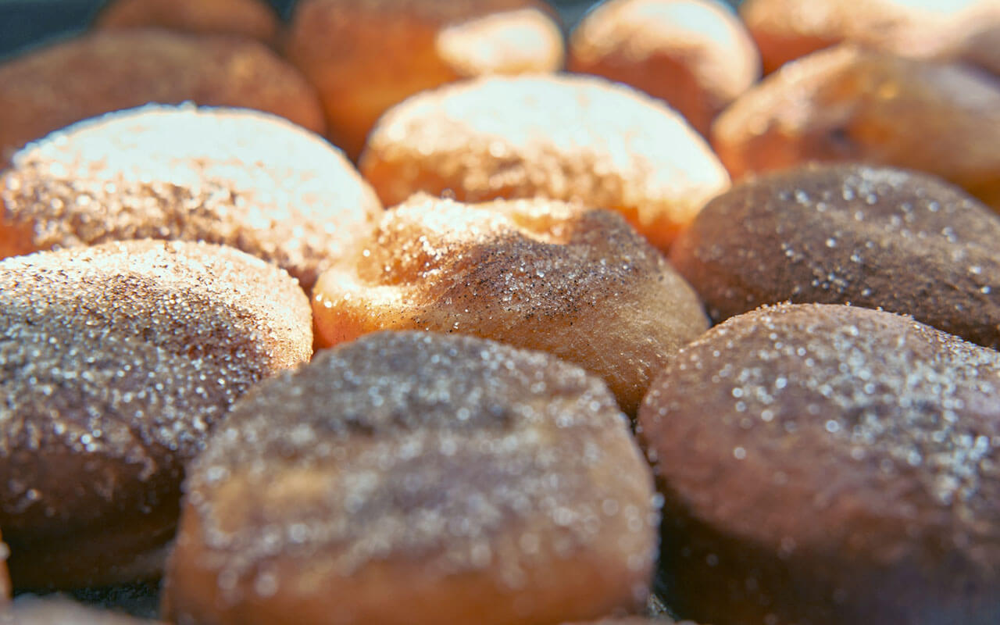

Cake Donuts

Description
A crispy, golden-brown, baked-to-perfection donut hole. This donut is a delicious breakfast treat with
simple cake donut base coated in a sugary sweet cinnamon sugar dusting.
Ingredients
- 2 eggs
- 1 cup white sugar
- 1 cup buttermilk
- 1 teaspoon vanilla extract
- 2 tablespoons melted butter
- 4 cups all-purpose flour
- 1 teaspoon baking soda
- 1 teaspoon baking powder
- 1/2 teaspoon ground cinnamong
- 1/2 teaspoon salt
Steps
- Beat eggs in stand mixer until whipped and creamy. Mix in sugar gradually until blended well.
Mix in buttermilk and vanilla extract. Mix in butter
- Add flour, baking soda, baking powder, and salt together in a bowl. Beat 1/2 fo the mixture
into the sugar mixture until well blended; beat remaining half. Let batter rest for 20 minutes
- Cut using donut mold. place on baking tray and bake in oven at 350 degrees for 15 minnutes.
- In a bowl add cinnamon sugar mixture. Roll donuts in this mixture until they are well coated.
Now the donuts are ready to serve.
Homepage